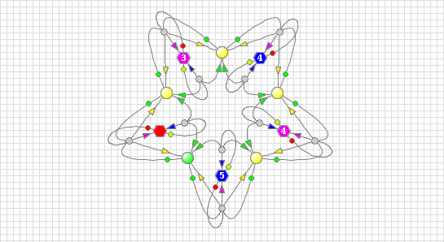

Modeling Formalism
This page describes graphical modeling formalism called the Multicolor Logical Net (McLN) intended for representing: properties of the modeled system, facts of occurrence of situations, and dependencies of facts on the current state of properties and the next state of properties on the state of facts in the form of a bipartite directed graph.
Representation of McLN Model in the Form of Bipartite Oriented Graph
This page is to describe a qualitative systems modeling approach, based on the Multicolor Logical Net, or McLN, graphical modeling formalism, introduced by the Kaleidoscope project. This approach is intended for representing: properties of the modeled systems, facts of occurrence of situations, and dependencies of facts on the current state of properties and the next state of properties on the state of facts in the form of a directed graph that can be depicted on such drawing surfaces as: a computer screen or a sheet of paper.
From the mathematical point of view this graph is a bipartite oriented graph that consists of two types of nodes, depicted as the big and small circles, and two types of arcs directed form big to small, and from small to big nodes.
Big nodes represent Properties of the modeled systems, states of which are indicated as solid color that fills the circles. Small circles are the facts state of which may either assert that: “The expected situation recognized” or that “The expected situation not recognized”. These states are represented as a solid white (situation is recognized) or gray (situation is not recognized) color, that fills the circles of the Condition node, respectively.
Arcs directed from some Property nodes to a Fact node represent dependence of that Fact on a certain combination of states of Property nodes. These arcs are marked with the colored dots, particular colors of which are those expected states that the arcs’ input Properties should have in order for the situation to be deemed as existing.
Accordingly, arcs directed from a Fact node to some Property nodes represent dependence of the state of the Property nodes on the state of their input Fact. These arcs have a small arrow head which is marked with color that is generated as the proposed state of the Property nodes depending on the state of the Fact.
So, all these connections literally mean that the state of each Fact node may depend on the state of one or more Property nodes, which may characterize a particular situation determined by the colors of the dots marking arcs directed from Property nodes to the Fact node. And, at the same time, the state of each Property node may depend on the state of one or more Fact nodes, and take state denoted by the color used to mark the arrow head of the arc directed form the Fact node to the dependent Property node in case when the Fact indicates that its input Properties represent situation denoted by the marks of their output arcs.
Functionality of Elements of McLN Model of a Qualitative Dynamical System
Although a pure mathematically, bipartite graph is merely two sets of nodes connected by arcs, a model of a qualitative dynamical system whose structure is defined on the basis of a bipartite graph is also various functions associated with the elements of the graph that ensure certain transformation of content of the dataflows, while the data move from one node of the graph to another, that are performed by the elements of the graph.
Example of Qualitative System Model Developed Based on McLN Graphical Modeling Formalism
Presented below example is the McLN model of popular discrete dynamical system widely known as the "Dining Philosophers". States of properties of this system are considered qualitative and the mechanizm of behavior is based on Qualitative System Behavior Specification described on the page "". The McLN view of this model is presented in the figure 1.
Figure 1. Model of qualitative dynamical system: “Dining Philosophers”.
In this example the model is implemented as the McLN, and thus in the form of a bipartite directed graph. Hence, all the properties of the modeled system which are the five Philosophers and five Chopsticks, depicted in the model as the big and small circles, respectively.
According to observed behavior of the modeled system real Philosophers may be in four different stated: Contemplating, Hungry, Waiting for Availability of Chopsticks and Dining. Their behavior iterates through named four states where state Dining transitions to state Contemplating and circle repeats.
Behavior of this model is driven by two external input events where the first one causes feeling of hungriness, and the second indicates that the period of Dining is ended with satisfaction and the philosopher may proceed with strolling and contemplating again.
Both of these input events are generated by the Qualitative Dynamical System Modeling & Simulation Environment used for creating McLN models and simulation of their behavior. These input events are provided with the help of a list of tick/action pairs, called a State Driven Program. While, the program is being created and associated with a property whose state can change as a result of external input-events, during constructing of the model.
More of Multicolored Logical Net Structure and Simulation Examples
The Kaleidoscope project's website titled: “Discrete Symbolic Dynamical Systems
& Models” introduces Multicolored Logical Net (MclN) Graphical Modeling
Formalism (GMF) and describes qualitative dynamical systems models development technique
based on McLN GMF.
Go to the "Home View" of the Site.
The site also illustrates behavior of the models of qualitative systems. Page "McLN Viewer" suggests to
pick
up a pre-developed model from menu, start simulation of the model, control the process
of its simulation with buttons presented on the page and observe the simulated behavior
of the model in the Model Presentation Space and the Behavior Log areas of the screen.
Go to the "McLN Viewer" of the Site.